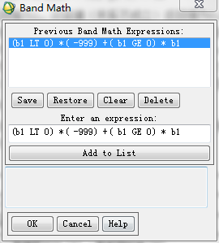

ENVI Band Math是一个灵活的图像波段处理工具，由于每个用户都有独特的需求，利用此工具用户可以自己定义处理算法，应用到在ENVI打开的波段或整个图像中，用户可以根据需要自定义简单或复杂的处理程序。例如：可以对图像进行简单加、减、乘、除运算，或使用IDL编写更复杂的处理运算功能，Band Math工具使用函数都是基于IDL的数据组运算符。

ENVI Band运算符使用方便且功能强大，它们可以对每一个像元进行检验和处理，避免了FOR循环（不允许在波段运算中使用）的使用。数组运算符包含关系运算符（LT、LE、EQ、NE、GE、GT）、Boolean运算符（AND、OR、NOT、XOR）和最小值、最大值运算符（<、>）。这些特殊的运算符对图像中的每个像元同时进行处理，将结果返还到与输入图像具有相同维数的图像中。
例如：
（b1 lt 0）*（-999）+（b1 ge 0）* b1
关系运算符对真值（关系成立）返回值为1，对假值（关系不成立）返回值为0。系统读取表达式（b1 lt 0）部分后将返还一个与b1维数相同的数组，其中b1值为负的区域返回值为1；其他部分返回值为0，因此在乘以替换值-999时，相当于只对那些满足条件的像元有影响。第二个关系运算符（b1 ge 0）是对第一个的补充——找出那些值为正或0的像元，乘以它们的初始值，然后再加入替换值后的数组中。
下表中描述了BandMath工具中常用的IDL数组操作函数，详细介绍，请参阅《IDL Reference Guide》（点击下载查看）。
| 种类 | 操作函数 |
|---|---|
| 基本运算 | 加 +、减 -、乘 *、除 / |
| 三角函数 | 正弦 sin（x）、余弦 cos（x）、正切 tan（x） 反正弦 asin（x）、反余弦 acos（x）、反正切 atan（x） 双曲正弦 sinh（x）、双曲余弦 cosh（x）、双曲正切 tanh（x） |
| 关系和逻辑运算符 | 小于 LT、小于等于 LE、等于 EQ、不等于 NE、大于等于 GE、大于 GT AND、OR、NOT、XOR 最小值运算符 < 、最大值运算符 > |
| 其他数学函数 | 指数 ^、自然指数 exp（x） 自然对数 alog（x） 以10为底的对数 alog10（x） 整型取整 round（x）、ceil（x）、floor（x） 平方根 sqrt（x） 绝对值 abs（x） |
最新博文